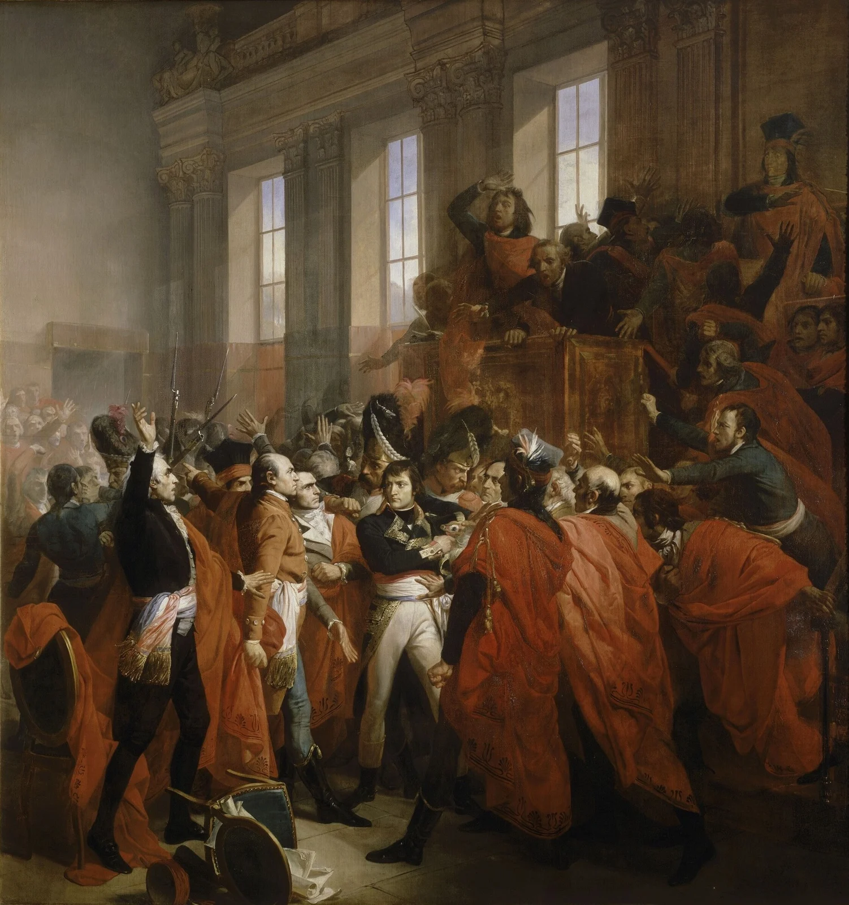

Napoleone conclude la Rivoluzione o se ne appropria?
Le condizioni e il progetto
Nel 1799 il Direttorio affronta difficoltà militari e politiche. Non tutto è fermo e non ogni francese attende un dittatore: si confrontano soluzioni diverse. Sieyès e altri promotori del colpo vogliono un esecutivo più forte e cercano l’appoggio di un generale. Bonaparte, tornato dall’Egitto, dispone di prestigio e di una rete di sostenitori. Il colpo è quindi un’operazione insieme civile e militare.
Lucien Bonaparte presiede il Consiglio dei Cinquecento. Il suo ruolo istituzionale sarà decisivo nel trasformare un’iniziativa contestata in una pretesa difesa della rappresentanza. Le forme giuridiche non scompaiono: vengono piegate e ricostruite sotto la pressione delle armi.
18 brumaio: isolare le assemblee
Il 9 novembre, 18 brumaio Anno VIII, il Consiglio degli Anziani dispone il trasferimento dei consigli a Saint-Cloud, adducendo una minaccia contro le istituzioni. Bonaparte riceve il comando delle truppe. Dimissioni e neutralizzazione dei direttori disarticolano l’esecutivo. Spostare i deputati fuori Parigi limita la possibilità di una mobilitazione cittadina in loro appoggio.
Il piano punta a ottenere dalle assemblee una trasformazione del regime. Non è ancora il trionfo sicuro che le immagini celebrative successive lasceranno immaginare. Occorre distinguere la preparazione del 18 dall’intervento decisivo del giorno seguente.
19 brumaio: la forza decide
Il 10 novembre l’ingresso di Bonaparte nei consigli incontra resistenza. Il generale non riesce a imporre il proprio discorso al Consiglio dei Cinquecento. Lucien contribuisce a presentare l’opposizione come un pericolo per l’assemblea e per il generale. I soldati sgomberano la sala: la deliberazione perde la libertà necessaria per essere considerata un normale procedimento costituzionale.
Una parte dei deputati rimasti approva misure che sopprimono il Direttorio e affidano il governo a tre consoli provvisori: Bonaparte, Sieyès e Roger Ducos. Il passaggio non coincide ancora con l’Impero e va distinto dalla Costituzione dell’Anno VIII, elaborata nelle settimane successive, che concentrerà il potere nel Primo console.

{kind=link}
Conseguenze e conclusione
Brumaio è una cesura convenzionale della storia della Rivoluzione: finisce l’esperienza del Direttorio e si apre il Consolato. Sopravvivono l’abolizione dei privilegi di nascita, la nuova distribuzione di molte proprietà e l’amministrazione trasformata; si restringono invece la competizione politica e la possibilità di partecipare liberamente al governo. L’ordine nuovo conserva e seleziona eredità rivoluzionarie.
La risposta alla domanda iniziale non è che la libertà conduca inevitabilmente alla dittatura. Dieci anni di conflitti hanno creato istituzioni, aspettative e paure; la guerra ha accresciuto il prestigio dell’esercito; uomini concreti hanno scelto di abbattere le regole vigenti. Napoleone si appropria della legittimità della Rivoluzione promettendo di stabilizzarne alcune conquiste e di chiuderne la stagione politica aperta.
Gli snodi da esplorare
- 9 novembre 1799 · 18 brumaio · Le assemblee trasferite a Saint-Cloud
- 10 novembre 1799 · 19 brumaio · Dalle assemblee al Consolato
Metti alla prova la comprensione
Napoleone conclude la Rivoluzione o se ne appropria? Rispondi collegando almeno due eventi, un gruppo sociale e una conseguenza. Distingui le condizioni di partenza dalle scelte dei protagonisti.
Sintesi finale, saperi irrinunciabili, glossario e attività · Verifica con recupero
Fonti e letture
- Fondation Napoléon · Il colpo di Stato di brumaio
- Costituzione del 5 fruttidoro Anno III · 22 agosto 1795
Le schede distinguono ricostruzione, interpretazione e limiti delle fonti. Metodo e bibliografia. I collegamenti esterni richiedono la connessione.